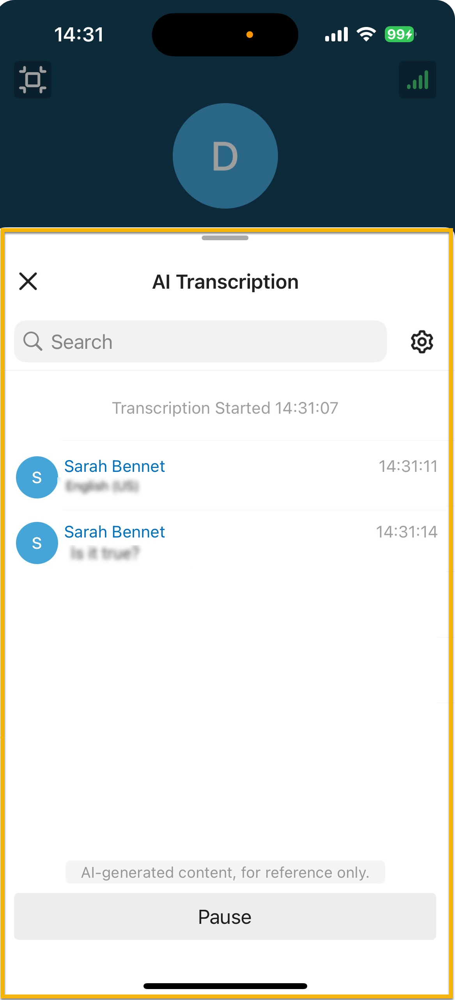

Configure AI Call Transcription
With AI call transcription feature, your call with the other party can be transcribed to readable text in real-time, and the client will generate a summary after the call. This topic describes how to configure AI call transcription on Linkus Mobile Client.
Requirements
- PBX Server
-
- The firmware of the PBX server is 83.20.0.x or later.
- System administrator has enabled Call Transcription (Path: ) for your extension.
- Linkus Mobile Client
- The version of your Linkus Mobile Client meets the following
requirements:
- Linkus iOS Client: 5.17.x or later
- Linkus Android Client: 5.17.x or later
Procedure
- At the top-left corner of Linkus Mobile Client, tap your account.
- Go to .
- In the Call Transcription section, configure the
following settings according to your need.
- Automatic Call Transcription: Specify
whether to automatically transcribe your call in real-time.
If this option is disabled, you need to manually enable AI Transcription on the call screen during an active call to trigger real-time call transcription when needed. For more information, see Transcribe a Call.
- Show Transcription Text After the Call: Specify whether to automatically display the transcripts and summaries in a pop-up panel after the call ends.
-
Language: In the drop-down list, select the desired language in which calls will be transcribed.
- Languages to Auto-Detect: If you set the
Language to Automatic, select the desired
languages for auto detection.
The system will automatically detect and transcribe calls in the selected languages.
Note:- You can select up to 5 languages for auto-detection simultaneously.
- Only one region can be selected per language. For example, you cannot select both English (UK) and English (US) at the same time.
- Automatic Call Transcription: Specify
whether to automatically transcribe your call in real-time.
- At the top-right corner, tap Done.
Result
- During the call, the call audio will be transcribed in the AI transcription panel in real time.
-

-
After the call ends, you can review the summary and transcript in the call log; Calls that have been transcribed are marked with a
 icon.Note: You can edit the call summary, or search transcript according to your need.
icon.Note: You can edit the call summary, or search transcript according to your need.